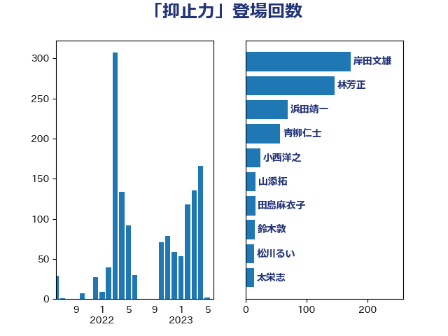

単語「抑止力」

| 岸田文雄 | 自由民主党 | 172 回 |
| 林芳正 | 自由民主党 | 146 回 |
| 浜田靖一 | 自由民主党 | 69 回 |
| 青柳仁士 | 日本維新の会 | 57 回 |
| 小西洋之 | 立憲民主党 | 25 回 |
| 山添拓 | 日本共産党 | 17 回 |
| 田島麻衣子 | 立憲民主党 | 16 回 |
| 鈴木敦 | 国民民主党 | 15 回 |
| 松川るい | 自由民主党 | 14 回 |
| 太栄志 | 立憲民主党 | 14 回 |
| 鬼木誠 | 立憲民主党 | 13 回 |
| 斎藤アレックス | 国民民主党 | 13 回 |
| 山井和則 | 立憲民主党 | 13 回 |
| 伊波洋一 | 無所属 | 12 回 |
| 吉田宣弘 | 公明党 | 11 回 |
| 篠原豪 | 立憲民主党 | 10 回 |
| 穀田恵二 | 日本共産党 | 10 回 |
| 玄葉光一郎 | 立憲民主党 | 10 回 |
| 浅田均 | 日本維新の会 | 10 回 |
| 河西宏一 | 公明党 | 10 回 |
| 上田清司 | 国民民主党 | 10 回 |
| 緒方林太郎 | 無所属 | 9 回 |
| 新垣邦男 | 立憲民主党 | 9 回 |
| 斉藤鉄夫 | 公明党 | 9 回 |
| 馬場伸幸 | 日本維新の会 | 8 回 |
| 青山繁晴 | 自由民主党 | 8 回 |
| 松野博一 | 自由民主党 | 8 回 |
| 掘井健智 | 日本維新の会 | 8 回 |
| 志位和夫 | 日本共産党 | 8 回 |
| 三浦信祐 | 公明党 | 8 回 |
| こやり隆史 | 自由民主党 | 8 回 |
| 羽田次郎 | 立憲民主党 | 7 回 |
| 河野太郎 | 自由民主党 | 7 回 |
| 小田原潔 | 自由民主党 | 7 回 |
| 井野俊郎 | 自由民主党 | 7 回 |
| 赤嶺政賢 | 日本共産党 | 6 回 |
| 木村次郎 | 自由民主党 | 6 回 |
| 山田勝彦 | 立憲民主党 | 6 回 |
| 古川禎久 | 自由民主党 | 6 回 |
| 北側一雄 | 公明党 | 6 回 |
| 井上哲士 | 日本共産党 | 6 回 |
| 音喜多駿 | 日本維新の会 | 5 回 |
| 藤田文武 | 日本維新の会 | 5 回 |
| 矢倉克夫 | 公明党 | 5 回 |
| 柴田巧 | 日本維新の会 | 5 回 |
| 杉本和巳 | 日本維新の会 | 5 回 |
| 杉尾秀哉 | 立憲民主党 | 5 回 |
| 末松義規 | 立憲民主党 | 5 回 |
| 塩村あやか | 立憲民主党 | 5 回 |
| 菅家一郎 | 自由民主党 | 4 回 |
| 美延映夫 | 日本維新の会 | 4 回 |
| 福島伸享 | 無所属 | 4 回 |
| 松原仁 | 立憲民主党 | 4 回 |
| 岡田克也 | 立憲民主党 | 4 回 |
| 宮崎政久 | 自由民主党 | 4 回 |
| 大島九州男 | れいわ新選組 | 4 回 |
| 堀井巌 | 自由民主党 | 4 回 |
| 青山大人 | 立憲民主党 | 3 回 |
| 重徳和彦 | 立憲民主党 | 3 回 |
| 西村智奈美 | 立憲民主党 | 3 回 |
| 藤巻健太 | 日本維新の会 | 3 回 |
| 萩生田光一 | 自由民主党 | 3 回 |
| 茂木敏充 | 自由民主党 | 3 回 |
| 細野豪志 | 自由民主党 | 3 回 |
| 石破茂 | 自由民主党 | 3 回 |
| 石川博崇 | 公明党 | 3 回 |
| 片山さつき | 自由民主党 | 3 回 |
| 櫛渕万里 | れいわ新選組 | 3 回 |
| 松本剛明 | 自由民主党 | 3 回 |
| 徳永久志 | 立憲民主党 | 3 回 |
| 岬麻紀 | 日本維新の会 | 3 回 |
| 山口那津男 | 公明党 | 3 回 |
| 小池晃 | 日本共産党 | 3 回 |
| 安江伸夫 | 公明党 | 3 回 |
| 大野敬太郎 | 自由民主党 | 3 回 |
| 前原誠司 | 国民民主党 | 3 回 |
| 佐藤正久 | 自由民主党 | 3 回 |
| 高木かおり | 日本維新の会 | 2 回 |
| 階猛 | 立憲民主党 | 2 回 |
| 鎌田さゆり | 立憲民主党 | 2 回 |
| 金村龍那 | 日本維新の会 | 2 回 |
| 金子道仁 | 日本維新の会 | 2 回 |
| 野田佳彦 | 立憲民主党 | 2 回 |
| 若林洋平 | 自由民主党 | 2 回 |
| 紙智子 | 日本共産党 | 2 回 |
| 笠井亮 | 日本共産党 | 2 回 |
| 竹内譲 | 公明党 | 2 回 |
| 空本誠喜 | 日本維新の会 | 2 回 |
| 福山哲郎 | 立憲民主党 | 2 回 |
| 神田潤一 | 自由民主党 | 2 回 |
| 石垣のりこ | 立憲民主党 | 2 回 |
| 石井苗子 | 日本維新の会 | 2 回 |
| 石井啓一 | 公明党 | 2 回 |
| 田村まみ | 国民民主党 | 2 回 |
| 田名部匡代 | 立憲民主党 | 2 回 |
| 玉木雄一郎 | 国民民主党 | 2 回 |
| 熊谷裕人 | 立憲民主党 | 2 回 |
| 浜地雅一 | 公明党 | 2 回 |
| 泉健太 | 立憲民主党 | 2 回 |
| 比嘉奈津美 | 自由民主党 | 2 回 |
| 榛葉賀津也 | 国民民主党 | 2 回 |
| 柿沢未途 | 無所属 | 2 回 |
| 村田享子 | 立憲民主党 | 2 回 |
| 本村伸子 | 日本共産党 | 2 回 |
| 末松信介 | 自由民主党 | 2 回 |
| 日下正喜 | 公明党 | 2 回 |
| 平木大作 | 公明党 | 2 回 |
| 川田龍平 | 立憲民主党 | 2 回 |
| 山際大志郎 | 自由民主党 | 2 回 |
| 小野田紀美 | 自由民主党 | 2 回 |
| 國場幸之助 | 自由民主党 | 2 回 |
| 吉田統彦 | 立憲民主党 | 2 回 |
| 吉田久美子 | 公明党 | 2 回 |
| 中野洋昌 | 公明党 | 2 回 |
| 中山展宏 | 自由民主党 | 2 回 |
| 三木圭恵 | 日本維新の会 | 2 回 |
| 高橋光男 | 公明党 | 1 回 |
| 阿部司 | 日本維新の会 | 1 回 |
| 長島昭久 | 自由民主党 | 1 回 |
| 鈴木義弘 | 国民民主党 | 1 回 |
| 鈴木俊一 | 自由民主党 | 1 回 |
| 野田聖子 | 自由民主党 | 1 回 |
| 谷川とむ | 自由民主党 | 1 回 |
| 西村康稔 | 自由民主党 | 1 回 |
| 舩後靖彦 | れいわ新選組 | 1 回 |
| 自見はなこ | 自由民主党 | 1 回 |
| 稲田朋美 | 自由民主党 | 1 回 |
| 福田昭夫 | 立憲民主党 | 1 回 |
| 福島みずほ | 社会民主党 | 1 回 |
| 田所嘉徳 | 自由民主党 | 1 回 |
| 熊田裕通 | 自由民主党 | 1 回 |
| 浜田聡 | NHK党 | 1 回 |
| 池下卓 | 日本維新の会 | 1 回 |
| 水野素子 | 立憲民主党 | 1 回 |
| 武井俊輔 | 自由民主党 | 1 回 |
| 森田俊和 | 立憲民主党 | 1 回 |
| 梅村聡 | 日本維新の会 | 1 回 |
| 柴山昌彦 | 自由民主党 | 1 回 |
| 柳ヶ瀬裕文 | 日本維新の会 | 1 回 |
| 松沢成文 | 日本維新の会 | 1 回 |
| 東徹 | 日本維新の会 | 1 回 |
| 本庄知史 | 立憲民主党 | 1 回 |
| 有村治子 | 自由民主党 | 1 回 |
| 後藤茂之 | 自由民主党 | 1 回 |
| 市村浩一郎 | 日本維新の会 | 1 回 |
| 島尻安伊子 | 自由民主党 | 1 回 |
| 岩谷良平 | 日本維新の会 | 1 回 |
| 岩渕友 | 日本共産党 | 1 回 |
| 岩屋毅 | 自由民主党 | 1 回 |
| 山谷えり子 | 自由民主党 | 1 回 |
| 山田美樹 | 自由民主党 | 1 回 |
| 山本香苗 | 公明党 | 1 回 |
| 山本順三 | 自由民主党 | 1 回 |
| 山崎正恭 | 公明党 | 1 回 |
| 小野泰輔 | 日本維新の会 | 1 回 |
| 小林鷹之 | 自由民主党 | 1 回 |
| 小宮山泰子 | 立憲民主党 | 1 回 |
| 寺田静 | 無所属 | 1 回 |
| 宮澤博行 | 自由民主党 | 1 回 |
| 宮本徹 | 日本共産党 | 1 回 |
| 宮崎勝 | 公明党 | 1 回 |
| 奥野総一郎 | 立憲民主党 | 1 回 |
| 大石あきこ | れいわ新選組 | 1 回 |
| 大塚耕平 | 国民民主党 | 1 回 |
| 大口善徳 | 公明党 | 1 回 |
| 堀場幸子 | 日本維新の会 | 1 回 |
| 堀井学 | 自由民主党 | 1 回 |
| 和田有一朗 | 日本維新の会 | 1 回 |
| 和田政宗 | 自由民主党 | 1 回 |
| 吉良州司 | 無所属 | 1 回 |
| 古川元久 | 国民民主党 | 1 回 |
| 北神圭朗 | 無所属 | 1 回 |
| 務台俊介 | 自由民主党 | 1 回 |
| 加藤明良 | 自由民主党 | 1 回 |
| 加藤勝信 | 自由民主党 | 1 回 |
| 伊藤俊輔 | 立憲民主党 | 1 回 |
| 仁木博文 | 無所属 | 1 回 |
| 中根一幸 | 自由民主党 | 1 回 |
| 中川正春 | 立憲民主党 | 1 回 |
| 上田勇 | 公明党 | 1 回 |
| 上杉謙太郎 | 自由民主党 | 1 回 |
| 上川陽子 | 自由民主党 | 1 回 |